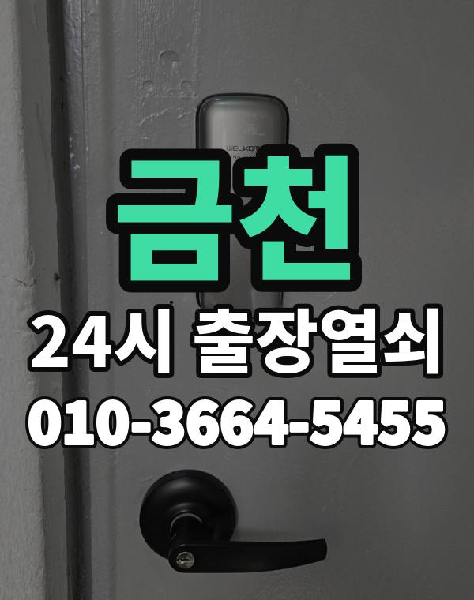

금천 출장열쇠, 이런 동네입니다
금천구는 가산동 디지털단지 사무실과 독산동, 시흥동 주택가가 나뉘어 있는 동네입니다.
독산동, 시흥동은 언덕 위 다세대가 많습니다.

금천구 출장 가는 동네
- 가산동
- 독산동
- 시흥동
가산동 출장열쇠, 독산동 열쇠집처럼 동네 이름으로 찾으셨어도 같은 곳입니다.
적혀 있지 않은 동네도 금천구 안이면 다 갑니다.
금천에서 하는 일
금천에서 전화 주실 때
언덕 동네는 차가 들어가기 어려운 골목이 있어 가까운 큰길을 같이 알려주세요.
사무실 도어락은 업무 시간 외에도 출동합니다.
가산디지털단지역, 독산역, 금천구청역 근처라고 말씀해 주셔도 위치 잡기가 쉬워집니다.
가까운 역이나 큰 건물, 단지 이름을 같이 알려주세요.
- 정확한 주소, 아파트라면 동과 호수
- 번호판 상태 (꺼짐, 켜짐, 경고음)
- 거주 확인용 신분증이나 주소 나온 우편물
전화부터 작업까지 순서는 이용안내에 적어 두었습니다.
금천 출장열쇠 자주 묻는 질문
금천 어느 동네까지 오시나요?
가산동, 독산동, 시흥동 등 금천구 전 지역 갑니다. 목록에 없는 동네도 전화로 위치만 알려주시면 됩니다.
새벽에 금천에서 전화해도 되나요?
24시간 전화 받고 출동합니다. 위치를 알려주시면 도착 예상 시간을 먼저 말씀드립니다.
문을 못 열면 비용을 내나요?
못 열면 비용은 받지 않습니다. 비용은 작업 전에 먼저 말씀드리고, 괜찮다고 하시면 시작합니다.
세입자도 문을 열어 주시나요?
사시는 분인지 신분증, 주소가 나온 우편물, 관리사무소 확인 중 하나로 확인한 뒤 엽니다.
금천에서 도어락 고장도 봐주시나요?
네, 문 열기와 함께 도어락 수리, 설치, 교체도 합니다. 고쳐서 되면 교체는 권하지 않습니다.